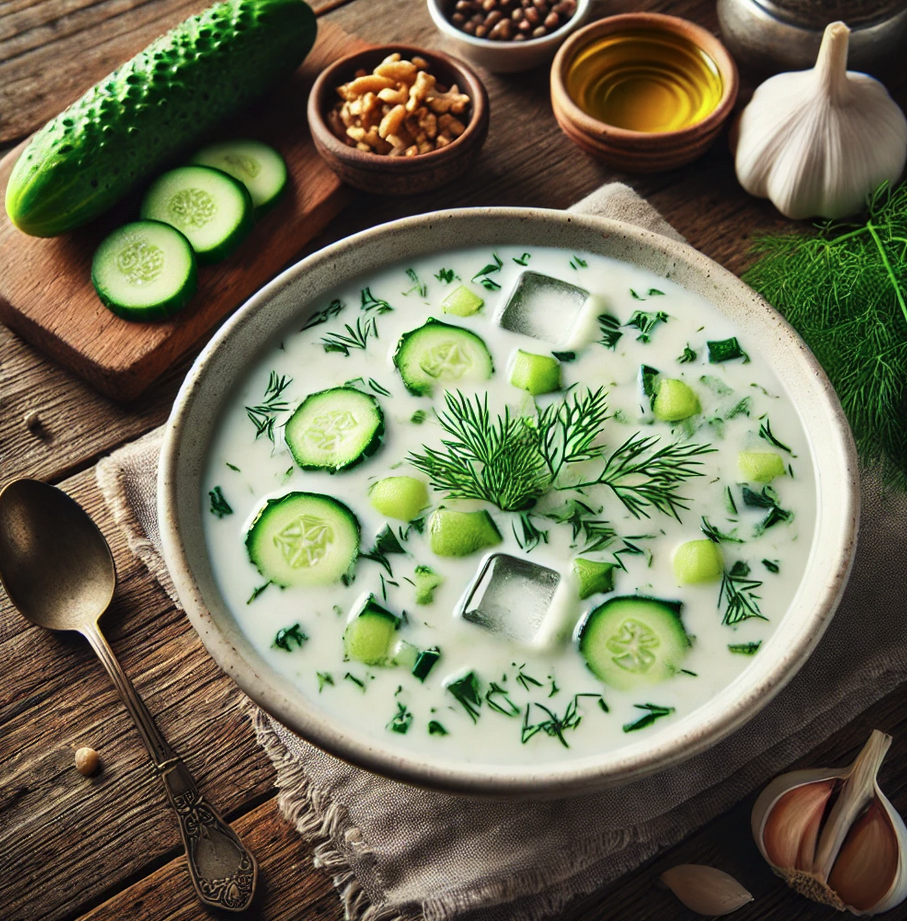

Desctiption
Tarator is a refreshing cold Bulgarian soup made from yogurt, water,
diced cucumbers, garlic, and fresh dill, often garnished with walnuts
and a drizzle of olive oil.
It's typically served chilled, sometimes
with ice cubes, making it perfect for hot summer days.
Ingredients
- 2 cups plain yogurt
- 1 cup cold water
- 1 large cucumber, finely diced
- 2 cloves garlic, minced
- 2 tablespoons fresh dill, finely chopped
- 2 tablespoons walnuts, chopped (optional)
- 1-2 tablespoons oil
- Salt to taste
- Ice cubes (optional)
Steps
- Wash the cucumber thoroughly, peel it if desired, and finely dice it into small cubes.
- n a large mixing bowl, whisk the yogurt until smooth. Gradually add the cold water while continuing to whisk until the mixture is well combined and has a smooth, soupy consistency.
- Stir in the minced garlic and diced cucumber into the yogurt mixture.
- Add the chopped dill and salt to taste. Mix everything thoroughly.
- If you prefer, you can add a few ice cubes directly into the soup to chill it further, or you can refrigerate the soup for 30 minutes before serving.
- Pour the soup into bowls. Drizzle a little olive oil on top and garnish with chopped walnuts (optional) and a sprig of fresh dill.
- Serve the Tarator cold, perfect for a refreshing appetizer or side dish on a hot day.